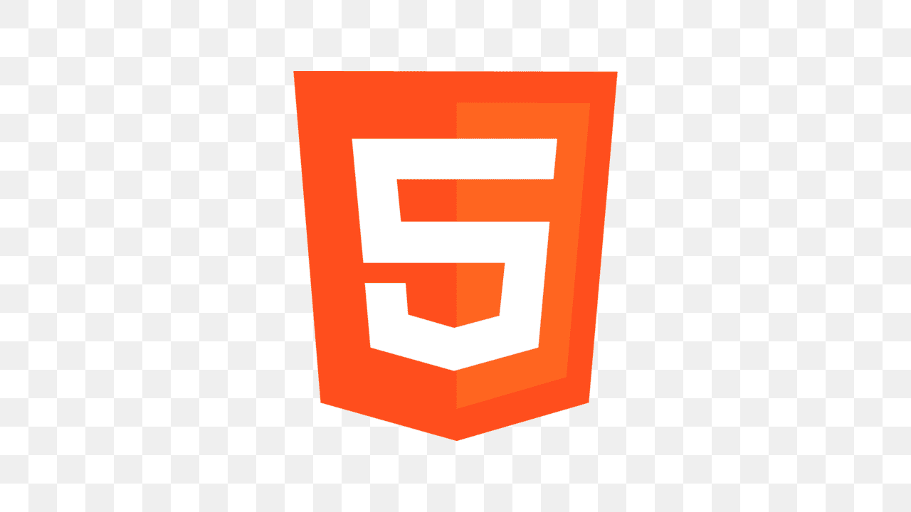

O Futt+ foi criado para reunir em um só lugar a história, os títulos, os grandes jogadores e as principais curiosidades dos clubes de futebol. Nosso objetivo é oferecer informações organizadas, confiáveis e de fácil acesso para torcedores e apaixonados pelo esporte, proporcionando uma experiência completa para quem deseja conhecer mais sobre o mundo do futebol.
O projeto foi desenvolvido utilizando HTML, CSS, JavaScript e Node.js buscando unir desempenho, design moderno e facilidade de navegação.

Compartilhar conteúdo de qualidade e proporcionar uma plataforma simples e intuitiva para todos os visitantes.
📧 Email: futt-mais@gmail.com
📱 WhatsApp: (11) 4022-8922
📍 São Paulo - SP